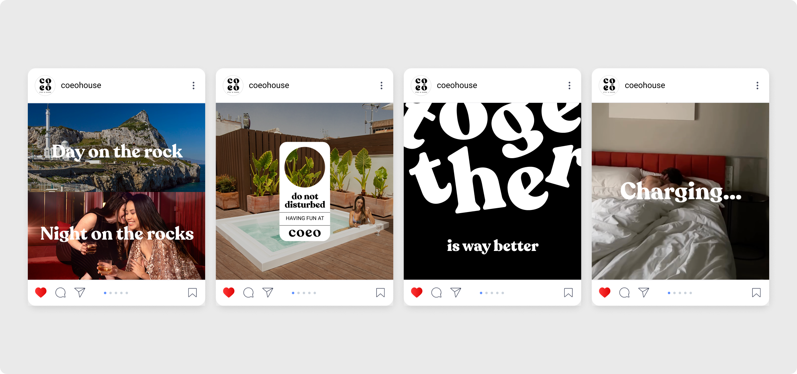

Coeo
Coeo מציעה גישה חדשה לאירוח בהוסטלים ובדירות נופש. במרכז נמצאים האנשים שפוגשים, החוויות שחולקים והרגעים שלוקחים הביתה. עזרנו להפוך את התפיסה הזאת לשפה עם אופי, וליווינו את היישום שלה באתר, במסעות הלקוח, בסושיאל ובמרחב הפיזי

החלק שלי
הייתי שותף למחקר ולגיבוש השפה של Coeo, ותרגמתי אותה לקופי באתר, במסעות הלקוח, בסושיאל ובמרחב הפיזי. לאורך הדרך, ניסינו להבין איך לתת לרעיון של חיבור בין אנשים ביטוי במילים - כאלה שמעוררות סקרנות לפני ההגעה, ועוזרות להרגיש שייכים מהרגע הראשון



חלק מהמסע
כשכתבנו את מסעות הלקוח של coeo, חשבנו איך להעביר את הפרטים היבשים שהאורחים מחפשים אבל גם על איך להעביר אותם כדי להצית התרגשות לפני ההגעה, לייצר שייכות בזמן השהות ולהשאיר תחושה טובה גם כשהם עוזבים. רצינו שהאופי של Coeo יעבור בכל הודעה, ושהמילים יהיו חלק מחוויית האירוח